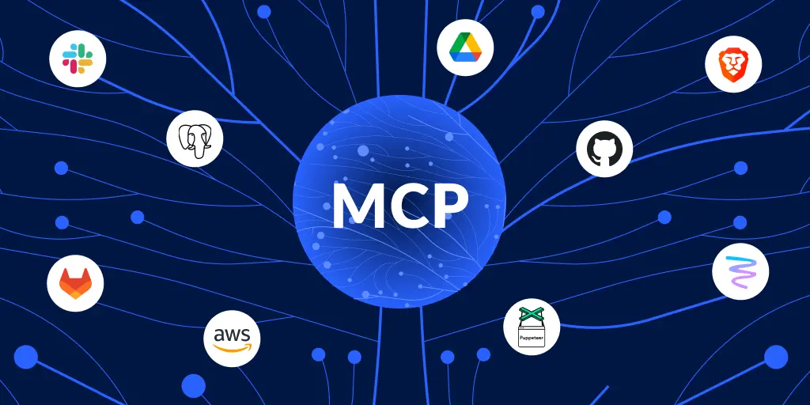

Side project
Webshocket - Python Framework
Framework Python WebSocket dengan RPC, sesi, dan rate limiting bawaan — tanpa boilerplate.

Model Context Protocol (MCP) adalah protokol standar yang memungkinkan asisten kecerdasan buatan terhubung dengan layanan dan sumber data eksternal secara terstruktur. BlazeSearch-RS adalah implementasi server MCP sekaligus mesin pencarian dan kurasi informasi yang dikembangkan sepenuhnya dalam bahasa pemrograman Rust — dirancang untuk menjadi jembatan antara agen kecerdasan buatan dengan informasi dari web secara efisien, andal, dan cepat.
Masalah mendasar yang dihadapi agen AI ketika mengakses informasi dari web secara langsung adalah inefisiensi token. Ketika sebuah agen AI membaca halaman web mentah, ia harus memproses seluruh konten — termasuk navigasi, iklan, footer, dan konten yang tidak relevan — yang menghabiskan jutaan token tanpa memberikan nilai informasi yang sepadan. BlazeSearch-RS menyelesaikan masalah ini dengan bertindak sebagai lapisan pemfilter dan sintesis di antara web dan agen AI: hanya informasi yang terverifikasi dan relevan yang diteruskan, dalam format ringkas yang siap dikonsumsi.
Pipeline tiga tahap
Setiap permintaan pencarian diproses melalui tiga tahap yang berjalan secara berurutan namun dioptimalkan untuk kecepatan maksimal:
- Pencarian multi-sumber: BlazeSearch-RS mendukung tiga penyedia pencarian secara bergantian — Serper, Brave Search, dan Firecrawl — yang dapat dikonfigurasi sesuai kebutuhan. Hasil pencarian dikumpulkan beserta konten lengkap halaman yang di-scrape secara paralel.
- Penyaringan relevansi berbasis LLM: Sebelum konten diteruskan ke tahap sintesis, sebuah model bahasa ringan mengevaluasi setiap URL dan menyaring hanya hasil yang benar-benar relevan dengan kueri. Tahap ini mencegah noise dari konten yang tidak berkaitan masuk ke dalam laporan akhir.
- Sintesis terstruktur: Konten yang lolos penyaringan diproses oleh model bahasa untuk menghasilkan laporan Markdown yang terstruktur — lengkap dengan tabel perbandingan, ringkasan eksekutif, dan lampiran verifikasi sumber — bukan sekadar kumpulan kutipan mentah.
Penanganan bot-detection modern
Tantangan terbesar dalam pengambilan konten dari web secara otomatis adalah sistem
anti-bot modern yang tidak lagi sekadar memeriksa User-Agent, melainkan menganalisis
sidik jari TLS (TLS fingerprint) dan perilaku HTTP/2 pada tingkat jaringan. BlazeSearch-RS menggunakan
crate wreq — sebuah hard fork dari reqwest — yang menyediakan kendali
mendalam atas ekstensi TLS dan pengaturan HTTP/2 sehingga setiap permintaan HTTP yang dikirim hampir tidak dapat
dibedakan dari lalu lintas peramban sungguhnya. Ketika akses langsung gagal, sistem secara otomatis mencoba sumber
cadangan: Wayback Machine dan Google Webcache — memastikan konten tetap dapat diakses meskipun situs target memblokir
akses langsung.
Pemrosesan paralel menyeluruh
Salah satu keunggulan fundamental BlazeSearch-RS adalah pemrosesan paralel yang diterapkan di setiap lapisan. Pengambilan konten dari beberapa URL dilakukan secara bersamaan menggunakan Tokio sebagai runtime asinkron. Mode penelitian multi-kueri menjalankan seluruh pipeline — pencarian, penyaringan, hingga sintesis — untuk setiap sub-kueri secara paralel sebagai tugas Tokio independen. Hasilnya adalah waktu respons yang mendekati waktu kueri tunggal meskipun memproses banyak topik sekaligus, dengan overhead memori yang sangat rendah berkat model kepemilikan Rust yang menghilangkan kebutuhan akan garbage collector.
Mode penelitian mendalam (deep research)
Untuk pertanyaan yang membutuhkan pemahaman berlapis, BlazeSearch-RS menyediakan mode deep research dengan kedalaman yang dapat dikonfigurasi hingga delapan iterasi. Tidak seperti pencarian biasa yang menghasilkan satu laporan tunggal, mode ini mengimplementasikan loop keputusan mandiri: setiap iterasi mengevaluasi celah informasi dari hasil sebelumnya, merumuskan pertanyaan lanjutan yang lebih spesifik, dan menjalankan pencarian baru untuk mengisi celah tersebut — persis seperti cara seorang peneliti profesional mempersempit topik secara bertahap hingga mendapatkan gambaran yang komprehensif.
Sebelum memulai dekomposisi kueri, BlazeSearch-RS juga menjalankan deteksi ambiguitas secara otomatis. Kueri yang terlalu singkat atau mengandung nomor versi — yang berpotensi merujuk pada banyak hal berbeda — terlebih dahulu digroundkan dengan hasil pencarian cepat sebelum didekomposisi menjadi sub-kueri yang lebih spesifik. Mekanisme ini mencegah dekomposisi yang meleset akibat interpretasi kueri yang keliru.
Seluruh kapabilitas ini tersedia baik melalui antarmuka baris perintah (CLI) untuk penggunaan langsung, maupun sebagai server MCP yang dapat dihubungkan ke agen AI eksternal seperti Claude Code — menjadikan BlazeSearch-RS infrastruktur riset yang dapat diintegrasikan ke dalam rantai kerja kecerdasan buatan yang lebih luas.
Hasil nyata: demo langsung
Berikut adalah contoh keluaran BlazeSearch-RS saat menjalankan kueri "OpenAI latest model". Di balik layar, sistem mencari dari 10 sumber secara paralel, menangani situs yang memblokir akses langsung melalui Wayback Machine, menyaring hasil yang relevan, lalu mensintesis laporan terstruktur — seluruhnya dalam hitungan detik:
🔍 Searching for: OpenAI latest model ## Model Designations Mentioned - **GPT-5.5** – flagship model for complex reasoning and coding. - **GPT-5.4** – strongest model on benchmark performance; Mini and Nano variants available. - **GPT-5.2** – latest flagship as of early 2026, optimized for production scale. ## Source Comparison | Source | Model Mentioned | Claim | |----------|--------------------------|--------------------------------------------| | Source 1 | gpt-5.5, gpt-5.4-mini | gpt-5.5 is flagship; smaller for latency | | Source 5 | GPT-5.4 | Strongest model on knowledge benchmark | | Source 6 | GPT-5.2, Mini, Nano | Latest flagship as of early 2026 | ## Gaps & Uncertainties - Sources conflict on exact latest version — no unified naming convention found. - No release dates disclosed across any source. - Relationship between versions (e.g. 5.5 vs 5.4) left unclarified.
Yang membedakan keluaran BlazeSearch-RS dari pencarian biasa adalah kejujuran epistemik pada laporannya: ketika sumber-sumber yang dikumpulkan saling bertentangan, sistem tidak memilih satu jawaban secara arbitrer, melainkan mempresentasikan kontradiksi tersebut secara eksplisit beserta celah informasi yang tidak dapat dijawab — persis seperti standar analitik intelijen profesional yang ditanamkan dalam system prompt-nya.